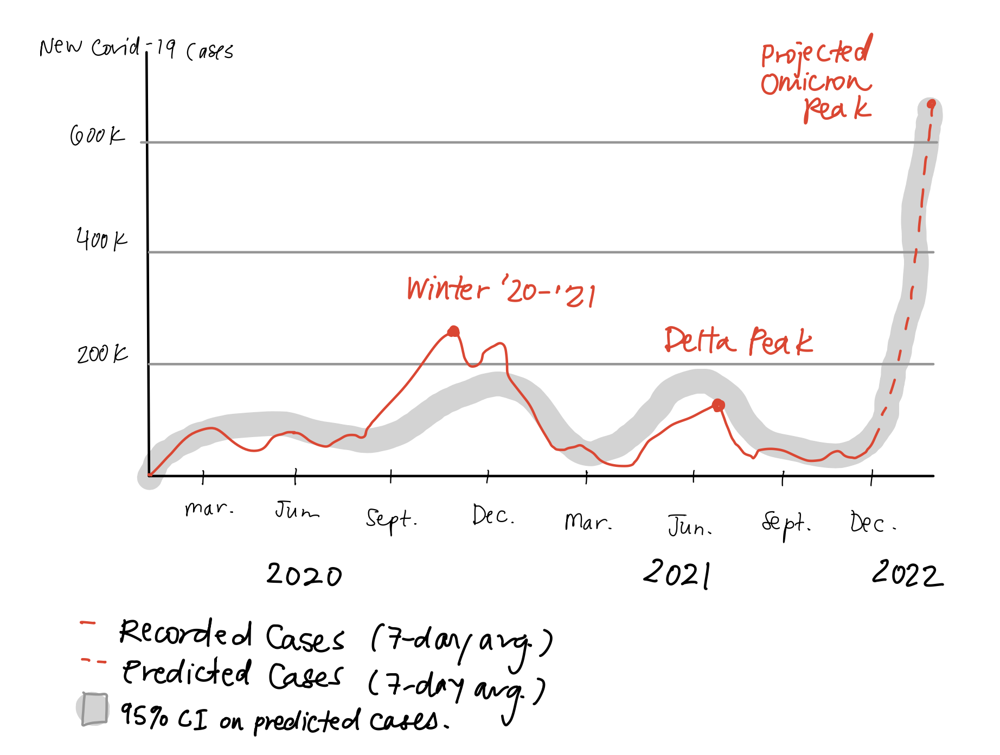
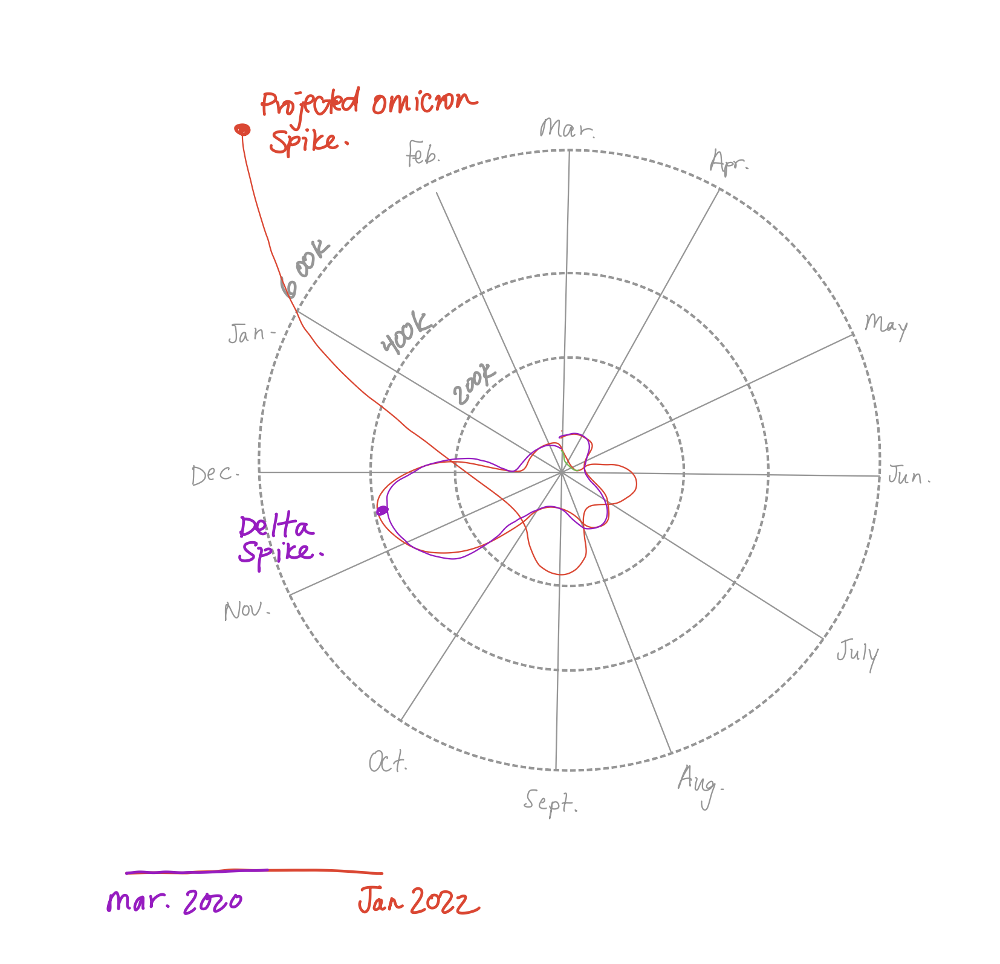
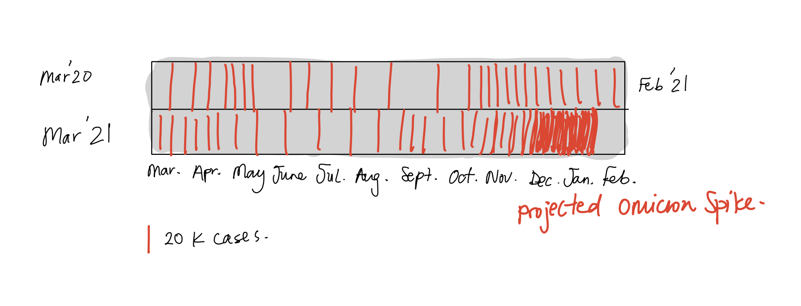
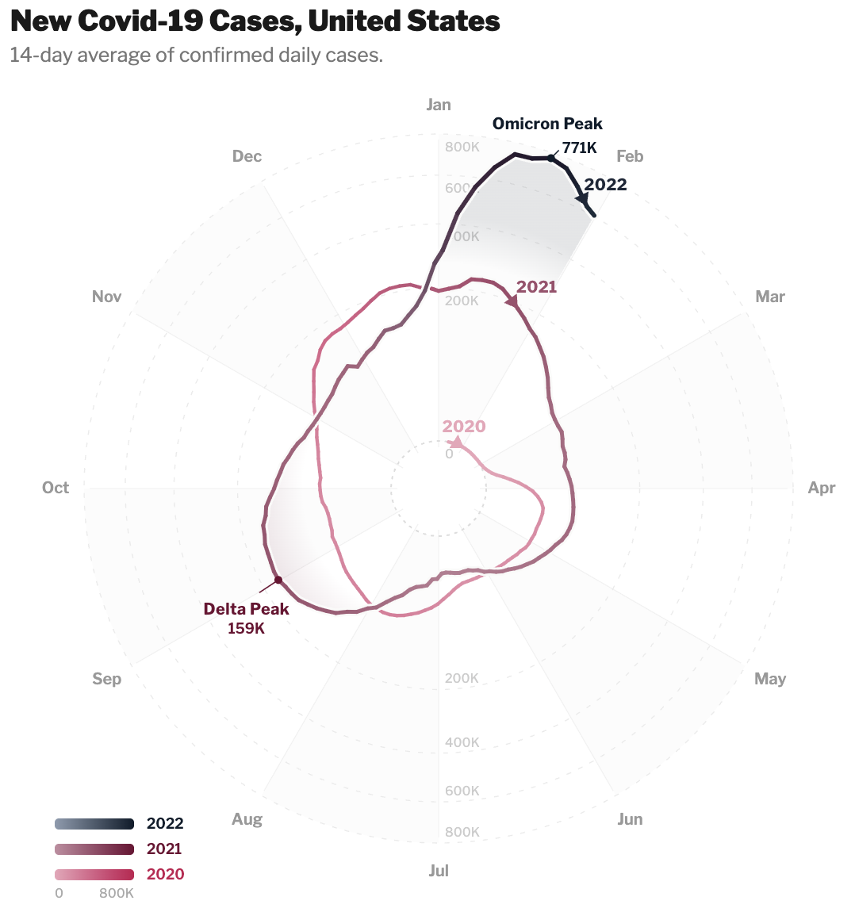

Reading & Critique

Insights about the data/visualization:
- The most salient part of the visual for me is that the number of new cases in Jan. 2022 noticeably exceeds that of Jan. 2021. The number of cases is increasing rapidly in Jan. 2022, compared with a slight contraction in cases in Jan. 2021.
- The next thing I noticed is that cases started to really swell for the first time around Nov. 2020. The case numbers start contract again in the summer of 2021 (May-Aug). It is interesting, and aligned with my memory of how the pandemic played out, that the number of cases from April 2020 to Oct. 2020 was relatively smaller and stable.
- Finally, I notice some seasonal trends: the case numbers contracted in the summer of 2021, and were also small during the summer of 2020. The case numbers ballooned for the first time in the winter of 2021, and again in Jan. 2022. However, there are also some seasonal inconsistencies; notably, the case numbers ballooned in the fall of 2021, but case numbers had not yet started to pick up in the fall of 2020. The nature of the pandemic, in terms of societal response and virus variants, was very different in 2020 vs. 2021. I would expect these differences to dominate the case numbers more than the seasonal variation, so I am not suprised that the trend is not perfectly consistent when comparing months across the two years.
Design Critique:
The two key messages of the article are that (1) the Omicron wave is forecasted to result in a large spike in cases,
(2) it is difficult to forecast the impact of the spike, both because we don't know how dangerous the Omicron variant is, and because
we can't forecast the number of cases with high precision. The first point is made relatively clearly by the visualization; the spike in Jan. 2022
is the most salient element of the visualization. The chart leverages length as a visual encoding, which is high effectiveness. Futhermore, the pop-out
for the Jan. 2022 spike is decent (it is not pre-attentive, but it is where my eyes went to first). The size of the Jan. 2022 spike is noticeable when compared
with the width of the line across the rest of the chart. At the time of publication, readers had lived through many spikes across several covid variants, which all
appear uniform when compared with the Jan. 2022 spike. This context helps the point land viscerally; you feel fear and dread about a spike that could make the spikes you
lived through look insignificant. I also appreciate that the visualization is quite minimal while still being expressive; the annotations are high-impact (subset of months are labeled, years with arrows, 7-day average annotation), and the simple legend gives a clear indication of what the band width represents (I am coming to realize that I love NYT legends!
The two NYT visualizations we've critiqued so far in class both had memorably clever and minimal legends). In summary, the core message of the visualization is conveyed visually, with few high-impact text and numbers.
However, the second point of the article does not come across through the visualization at all. Even worse, the article consistently uses the word "cone" to describe
uncertainty bands, while the cone in legend of this figure has nothing to do with uncertainty. We also have strong priors from typical visualizations that shaded bands
around a solid line represent uncertainty. In this figure, the solid line has no clear meaning, so its inclusion is only distracting. I also found myself wondering what the distance of the black line to the center of the spiral represents, since the spiral is not circular. However, it does not appear to mean anything. I also think that although length, the primary visual encoding, is effective, the signal detection / magnitude estimation
is quite difficult. This makes it difficult to interpret much from the chart reliably, other than that the spike in Jan. 2022 is larger than other spikes in the chart. If the only point we are to take away from the chart is that the spike in
Jan. 2022 is larger than the others, a surprising amount of space in the visualization is occupied by documenting the other months. I think some additional annotations, or re-thinking the visualization to have visual encodings that allow for easier magnitude estimation, would allow the reader to get more out of the rest of the chart (which, in theory, should give a relatively comprehensive view of the history of infection rates).
I also think the some of the visualization choices make the figure unnecesarily hard to interpret: first, my immediate inclination is read the visualization from out to in. Second, I found it hard to detect a seasonal trend over the two years that are visualized, despite the fact that the visualization strongly implies we should look for one. Third, it takes some mental energy to determine where in time you are looking; you have to count up what month you are in, and also keep track of where the last year marker is to understand what year you are in.
Visualization Sketches

For sketch 1, I addressed several of my design critiques above.
- First, I incorporated a visualization of the uncertainty of the forecasts. I also chose to visualize the uncertainty bands on the already recorded data, to give readers a sense of how accurate the forecasts have been in the past. Here, the bands visualize uncertainty, which is a typical choice that readers will be familiar with.
- Second, I tried to make it easier to read off case numbers for Jan. 2022, as well as earlier months. I think a simple line chart is more interpretable for visualizing this data.
- Third, I added some details to make the chart easier to interpret instantaneously. I removed visual elements that prompt the reader to compare numbers month to month, since seasonal trends are not readily available. I also added some annotations to label earlier spikes, to contextualize the Jan. 2022 spike at a glance. Finally, I added both month and year labels next to each other so it is easier to read off where exactly in time you are looking.

For sketch 2, I wanted to preserve the radial design of the original visualization, while addressing several of my core critiques.
- Principally, in the original design, the distance of the black line to the cneter of the spiral has no meaning. Here, the visualization is a true radial plot, where the angle around the circle represents the month, and the length of the line represents the number of cases.
- To make the plot more interpretable, I also added level set lines at 200k, 400k, and 600k cases. When the line crosses these level sets, we can clearly read off the number of cases. I also added annotations for the delta spike and the projected omicron spike to contextualize the visualization for readers. Readers had, at this point, lived through the delta spike, and marking it directly helps them to understand the magnitude of the projected omicron spike in context.
- One downside of this visualization compared to the original spiral is that the line intersects itself, since it has to circle around the radial plot twice (two years of data is visualized). In order to make the visualization easier to read, I colored the line according to the year and added a legend at the bottom. If I were rendering this visualization with software instead of hand-sketching it, I would make the color legend continuous from purple to red, instead of two discrete colors.

For sketch 3, the main critique I wanted to address is that it is mentally taxing to compare data month-by-month in the original visualization.
- For this sketch, I wanted to explore a 1-dimensional visualization of magnitude to facillitate easier month-by-month comparison. In my previous visualizations, which were both 2-dimensional representations (linear and radial line plots), I felt like it was hard to visually compare months at a glance. I was inspired by Doppler effect visualizations, and chose to visualize each increment of 20k cases as a vertical line. I am satsified with this choice, because I find it much easier to visually compare the months by looking at the density of the lines, compared with the original visualization.
- I also chose visualize two 1-dimensional "doppler" bands for each year, where each band spans 12 months starting in March 2020. The decision to start at March rather than January was inpsired by the original visualization, because I found it unintuitive to track data over three years, where two of the years had partial data (for 2020, the data begins in March, while for 2022, there is only projections for January). Instead, I thought it was more intuitive to present the data starting from March 2020, where the first band has a full year of data, and the second band has almost a full year of data.
- As in the earlier two sketches, I decided to label the projected omicron spike. However, this visualization is quite small and minimal compared to the other two, so I chose not to label other spikes. Including those additional labels made the visualization too cluttered, I thought. It is a downside of this design that it does not lend itself naturally to additional labelling, because I think that labeling contextualizes the numbers in an important way. However, I think this design could work well as a small, secondary visualization in an article, where you have limited real estate and plenty of context for the data.
Final Visualization Design

Final Writeup
I wanted to re-design the original visualization, and preserve it's essential message: the spike for the Omicron wave in January 2022 is large, when compared with case numbers across the rest of the pandemic up to that point. In order to do an apples-to-apples comparison with the original visualization, I truncated the data after January 2022. I decided to keep the original "spiral" visualization, but improved it in several ways. Now, the radial distance from the center represents the 14-day average of confirmed daily cases. In the original visualization, the path of the spiral had no actual meaning; the case numbers were measured by the thickness of the spiraling band. In order to make my radial distance spiral very smooth (I wanted to emphasize longer timescale trends, rather than short horizon oscillations in case load), I plotted a 14-day average of confirmed daily cases, whereas the original visualization plotted a 7-day average. I also sub-sampled the data and plotted a point only once every 3 days (in other words, I computed average case counts over the last 14 days for each day in the dataset, and then subsampled the averages). Another choice I made was to visualize the square root of the case numbers in the radial direction. I made this choice for two reasons. First, humans percieve size based on the enclosed area of a radial visualization. This design choice aligns visual perception better with the data. Second, when I visualized raw case numbers in the radial direction, there was a lot of unused area in the visualization, since the spike for the Omicron peak is so large. In order to facilitate easier interpretation of the case numbers, I also plotted level sets at 0, 200K, 400K, 600K, and 800K cases. I decided to label the level sets twice - near January and July - in order to enhance visual comprehension. I also added redundancy to the visualization for the case numbers. In addition to representing case numbers by the radial distance, within each year, I also had a colormap from light to dark, where light versions of the year color represent fewer cases, and dark versions of the color represent more cases. This choice enhanced the immediacy with which I can perceive the relative case numbers between different points on the spiral. In order to differentiate between the years, I used different color lines for each year, and I also added labels on the legend and on the lines themselves to indicate which section of line represents which year. In order to make it easier to keep track of which month you are in, I added a very light grey background to the pie segment of every other month. In order to make it visually obvious that time is stacking up from 2020 (pink line) to 2022 (blue line), I added white halo paths beneath the 2021 and 2022 lines, to make it look like the later year lines are landing on top of the earlier lines. Inspired by the NYT legends, I added a very minimal legend to explain the dual meaning of the colormaps: differentiating years, and also indicating the number of cases at a given point within the year. Finally, I decided to directly label the Delta Peak, as well as the Omicron Peak, in order to contextualize the size of the Omicron Peak very concretely.
I think my final design addresses the bulk of my original critique. I removed the notion of "cone" from my visualization. In the original visualization, using a "cone" to represent case counts is counterintuitive, because that visual encoding is typically used for uncertainty. I also gave the radial distance of the line meaning, whereas in the original visualization it has no meaning. I think that radial distance is more appropriate visual encoding to facilitate signal detection and magnitude estimation, versus the width of the spiral in the original visualization. In my new visualization, it is extremely easy to compare case counts in a given month across years by seeing which line is farther from the origin of the radial plot. In the original visualization, it is very difficult to estimate unless the case counts are very different in a given month across years. I also tried to make it easier to keep track of what month you are in, by adding month labels for every month and by coloring the lines according to the year. The parts of the original critique that I was not able to address include: (1) I still did not visualize forecast uncertainty. This data was not included, but I think my design lends itself well to including uncertainty bands around the line. (2) I did not make much progress in resolving my incination to read the visualization from out to in. I think the spiral design itself is a visual prior on out-to-in that is hard to overcome. (3) I preserved the spiral design element, which still invites month-by-month comparison and detection of seasonal trends, when they do not readily exist. I decided to forego progress on points (2) and (3), since I wanted to stick to the spiral design, despite some of its limitations.